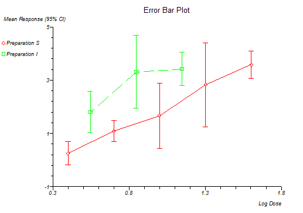

Error Bar Plot
Menu location: Graphics_Error Bar.
The high-low-close plots of business graphics packages can be difficult to manipulate if you have to display more than one series, StatsDirect provides this function as a more convenient way to prepare error bar plots. You can use up to ten series for which you must provide four variables for each series; the X data, the Y data, the upper error bar for Y and the lower error bar for Y. The error function can be, for example, the standard error of the mean for each Y when each Y point represents the mean of repeated observations. In this case the error bars are symmetrical. You can generate workbook columns for upper and lower error bars using apply function. Different series are represented by different marker styles and you can opt to show joining lines between the markers.
